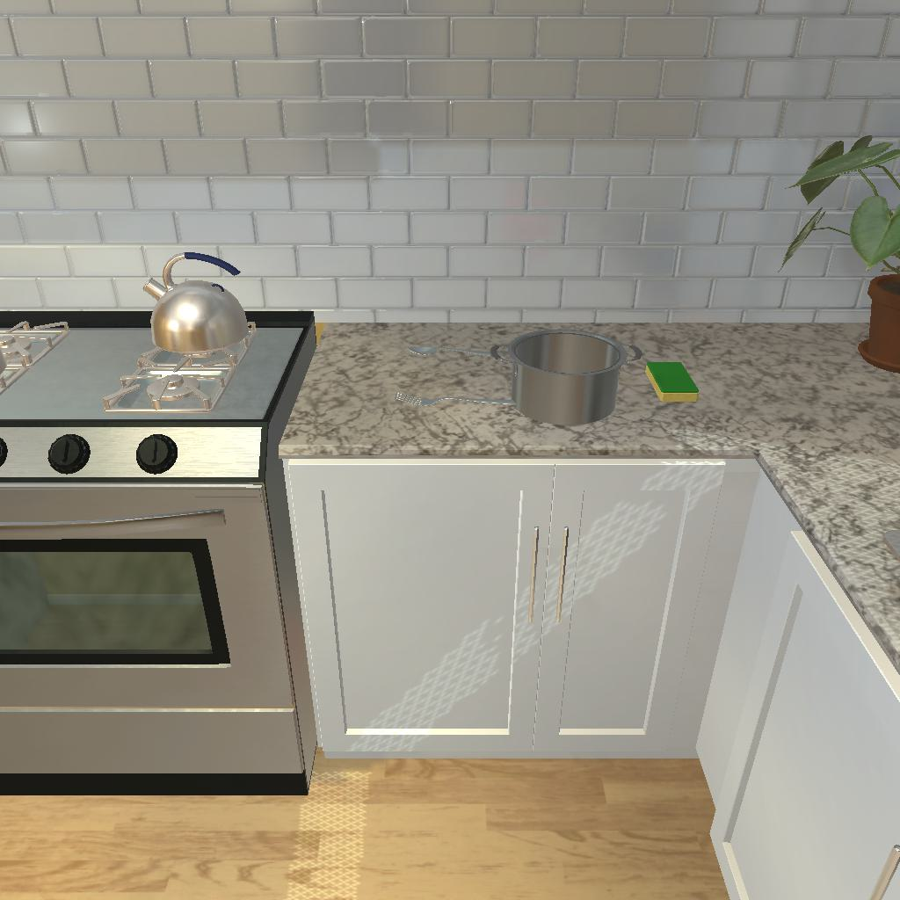

---------------------------------------------------------task: 16---------------------------------------------------------
--------------------------------------------------------------------------------------------------------------------------------------------------------------------
--------------------------------------------------------------------------------------------------------------------------------------------------------------------
Step:--------------------------------------------------------------------------9-------------------------------------------------------------------------------
----------------------------------------
VLM Prompt:
Image1:
Image2:
**Instruction**
1. Analyze the provided images to identify all visible household objects and compare the difference between images (e.h. whether the object is opened or not and taken on hand or not), focusing on those relevant to the task description "put a cool pan in sinkbasin."
2. Use the analysis of images and the task hint "The agent must find an object of the desired type, pick it up, go to a fridge, cool the object with the fridge, then find the correct location to place it, and put it down there. The agent does not need to use the fridge button or open the fridge to cool the object, and the agent just needs to do action that is "cool the object with the fridge"." to answer the question: what is the most reasonable action in the choices for the task description "put a cool pan in sinkbasin"?
3. Decide and write the answer using the template: The answer is: (i): , where i is the real number. If there is no desired object in images, search every place based on **Initial Observation** to find the object. And if no one is exactly correct, choose a similar answer.
**Initial Observation**
You are in the middle of a room. Looking quickly around you, you can see cabinet (1-9), countertop (1-3), drawer (1-9), stoveburner (1-4), microwave (1), sink (1), fridge (1), toaster (1), coffeemachine (1), sinkbasin (1), shelf (1-3), garbagecan (1)
**Answer Choices**
(1): go to cabinet 2
(2): go to countertop 2
(3): go to drawer 1
(4): go to drawer 2
(5): go to drawer 3
(6): go to drawer 4
(7): go to drawer 5
(8): go to stoveburner 2
(9): go to stoveburner 3
(10): go to stoveburner 4
(11): go to cabinet 3
(12): go to cabinet 4
(13): go to microwave 1
(14): go to cabinet 5
(15): go to cabinet 6
(16): go to cabinet 7
(17): go to sink 1
(18): go to fridge 1
(19): go to toaster 1
(20): go to coffeemachine 1
(21): go to cabinet 8
(22): go to drawer 6
(23): go to drawer 7
(24): go to drawer 8
(25): go to sinkbasin 1
(26): go to shelf 1
(27): go to shelf 2
(28): go to countertop 3
(29): go to shelf 3
(30): go to drawer 9
(31): go to cabinet 9
(32): go to garbagecan 1
(33): take pot 1 from stoveburner 1
(34): take houseplant 1 from stoveburner 1
(35): take kettle 2 from stoveburner 1
(36): take dishsponge 1 from stoveburner 1
(37): take stoveknob 2 from stoveburner 1
(38): take stoveknob 1 from stoveburner 1
(39): take fork 1 from stoveburner 1
(40): take spoon 2 from stoveburner 1
(41): take stoveknob 3 from stoveburner 1
(42): take kettle 1 from stoveburner 1
(43): examine stoveburner 1
**Answer**
Let's think step by step by following the instructions.
----------------------------------------
----------------------------------------
Original Response:
Image Analysis:
In Image 1, we see a pan on countertop 1, a saltshaker on countertop 1, and two kettles on stoveburner 2 and stoveburner 3. There are no visible cabinets, drawers, microwave, sink, fridge, toaster, coffeemachine, sinkbasin, shelves, or garbagecan in this image.
In Image 2, we see a kettle on stoveburner 2, a pot on countertop 2, a fork on countertop 2, a sponge on countertop 2, and a houseplant on countertop 3. There are no visible cabinets, drawers, microwave, sink, fridge, toaster, coffeemachine, sinkbasin, shelves, or garbagecan in this image.
Comparing both images, the pan visible in Image 1 on countertop 1 is no longer there in Image 2, indicating it has been moved or taken. The saltshaker also appears to have been moved or taken as it is not visible in Image 2.
Task Analysis:
Based on the task description "put a cool pan in sinkbasin," we need to find a pan, cool it with the fridge, and then put it in the sinkbasin.
From the initial observation, we know there is a fridge (1) and a sinkbasin (1) in the room.
From the images provided, we know there was a pan on countertop 1 in Image 1, which is no longer visible in Image 2. This suggests the pan has been moved or taken, possibly by the agent.
The most reasonable action for the task would be to:
1. Take the pan if it has not already been taken by the agent.
2. Go to the fridge to cool the pan (since the agent does not need to use the fridge button or open the fridge, this action is implied).
3. Go to the sinkbasin to place the cool pan.
Since the pan is no longer visible in Image 2, we must assume the agent has already taken the pan or must search for it based on the initial observation.
The Answer is:
Considering the steps mentioned above, the most reasonable action is to go to the sinkbasin to place the cool pan, as the agent must have already taken the pan to cool it with the fridge. Therefore, the answer is (25): go to sinkbasin 1.
----------------------------------------
----------------------------------------
>>> Refine Original VLM Response and Get Pure Action: No action
----------------------------------------
-----------------------------------------------------------------
Running time: 20.471049785614014 seconds
Total Money: 7.631620000000005
-----------------------------------------------------------------
-----------------------------------------------------------------
Text Observation:Nothing happens.
-----------------------------------------------------------------
UNSUCCEED